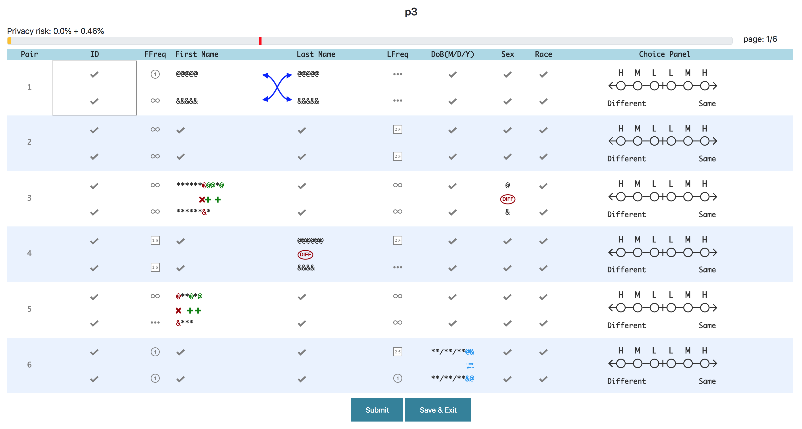
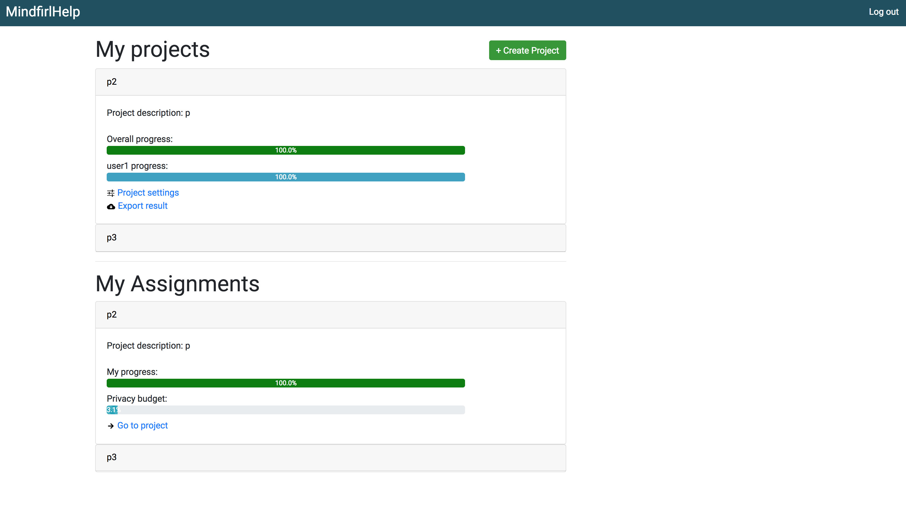
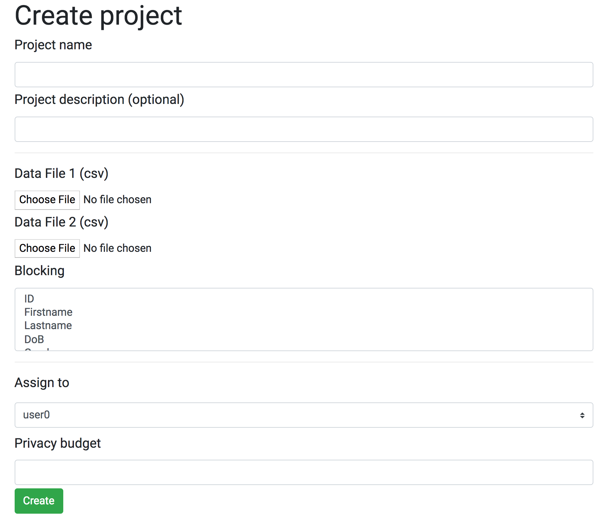

What is MINDFIRL?
MINDFIRL stands for Minimum & Necessary Disclosure for Interactive Record Linkage. It is a software for interactive record linkage. At the beginning, all the attributes of the records are masked, and you can make record linkage decisions by the aid of supplemental visual markups, as shown in the figure. You can click the attribute to disclose it if you think the information can help you make better decisions. However, openning attributes costs your privacy budget. When the privacy budget reach the limit set by the project manager, you cannot open more attributes.
Projects and Assignments
You can create projects and assign the project to others. Your projects are shown in the "My projects" list. By clicking on the project, you can check the detailed information. The "My Assignments" list shows the projects that assigned to you. You can check your progress and privacy budget used. You can start to work on the project by clicking "Go to project".
Creating projects
You can create project by clicking the "create project" button above. You will need to provide two csv files with following format:
| ID | voter_reg_num | firstname | Lastname | DoB | Gender | Race |
|---|---|---|---|---|---|---|
| 1 | 1000000657 | LYNN | WILDING | 07/04/1946 | M | W |
| 2 | 1000027594 | CHARLES | ALBUQUERQUE | 07/10/1930 | M | W |
| 3 | 1090353268 | RONNIE | HILL | 07/25/1958 | M | B |
The first column is internal ID for your database. If two records have the same internal ID, then they must be the same record. However, if two records have different internal ID, they could be the same record or different records. The second column is the id for the data, such as voter registration number or ssn. This id does not indicate two records are the same or different.
Then you can choose one or more attributes to block on. Records with same blocking attributes will be group into one block. Then, we will generate record linking candidates for each block.
Then you can choose the user to assign to. You can also set up a privacy budget limit. You can type in percentage of privacy budget limit, or choose among these options: masked, minimum, moderate, full. The "masked" option means no attribute can be opened, and "full" means all the attributes are opened at the beginning. The "minimum" and "moderate" option has around 5% and 40% privacy budget limit, dependent on the data.
